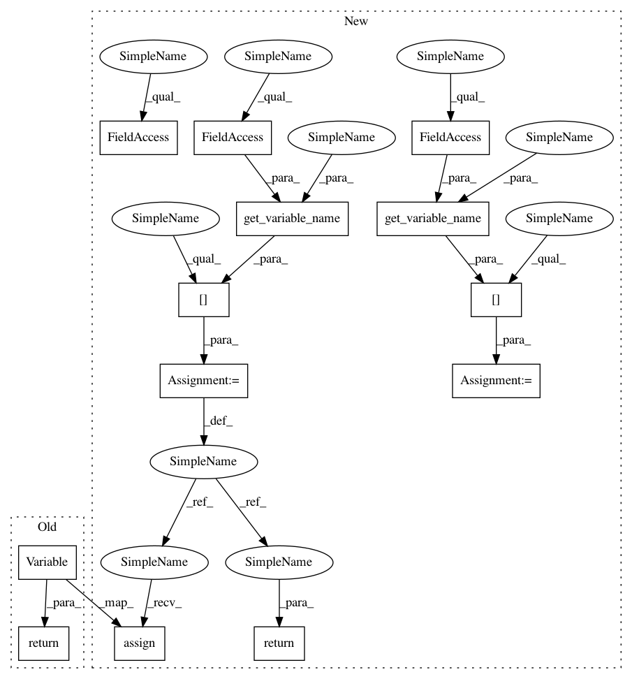

cc9194708510631c93528e8337a4526b03dbdb7d,onnx_tf/handlers/backend/lstm.py,LSTM,_custom_getter,#Any#Any#Any#Any#Any#Any#,45
Before Change
if names[-1] == "w_f_diag":
return tf.Variable(tf.split(p, 3, axis=1)[2])
if names[-1] == "w_i_diag":
return tf.Variable(tf.split(p, 3, axis=1)[0])
if names[-1] == "w_o_diag":
return tf.Variable(tf.split(p, 3, axis=1)[1])
return getter(name, *args, **kwargs)
After Change
else:
p = tensor_dict[node.inputs[7]]
if names[-1] == "w_f_diag":
w_f_variable = tensor_dict[get_variable_name(
node, cls.peephole_weight_forget_var_name)]
w_f_variable.assign(tf.split(p, 3, axis=1)[2])
return w_f_variable
if names[-1] == "w_i_diag":
w_i_variable = tensor_dict[get_variable_name(
node, cls.peephole_weight_input_var_name)]
w_i_variable.assign(tf.split(p, 3, axis=1)[0])
return w_i_variable
if names[-1] == "w_o_diag":
w_o_variable = tensor_dict[get_variable_name(
node, cls.peephole_weight_output_var_name)]
w_o_variable.assign(tf.split(p, 3, axis=1)[1])
return w_o_variable
return getter(name, *args, **kwargs)
In pattern: SUPERPATTERN
Frequency: 3
Non-data size: 13
Instances
Project Name: onnx/onnx-tensorflow
Commit Name: cc9194708510631c93528e8337a4526b03dbdb7d
Time: 2020-11-16
Author: chhuang@us.ibm.com
File Name: onnx_tf/handlers/backend/lstm.py
Class Name: LSTM
Method Name: _custom_getter
Project Name: onnx/onnx-tensorflow
Commit Name: cc9194708510631c93528e8337a4526b03dbdb7d
Time: 2020-11-16
Author: chhuang@us.ibm.com
File Name: onnx_tf/handlers/backend/lstm.py
Class Name: LSTM
Method Name: _custom_getter
Project Name: onnx/onnx-tensorflow
Commit Name: bfba822bf41d8cd4e37f53c0a2d80bc1865e5972
Time: 2020-11-19
Author: chhuang@us.ibm.com
File Name: onnx_tf/handlers/backend/rnn.py
Class Name: RNN
Method Name: _custom_getter
Project Name: onnx/onnx-tensorflow
Commit Name: bfba822bf41d8cd4e37f53c0a2d80bc1865e5972
Time: 2020-11-19
Author: chhuang@us.ibm.com
File Name: onnx_tf/handlers/backend/gru.py
Class Name: GRU
Method Name: _custom_getter